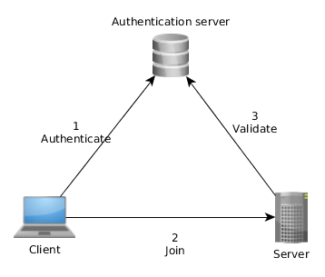
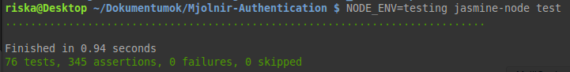
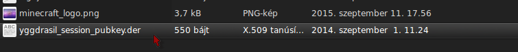
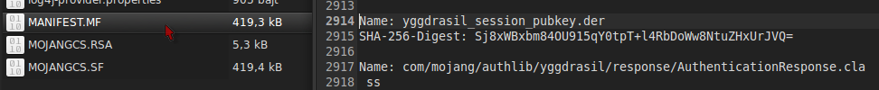
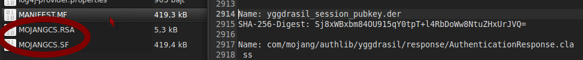
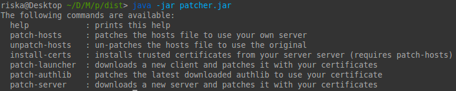

Faking an authentication server
SSL? Digital signatures? Who cares?!
András Rutkai
What is this about?
I've created a fake authentication server for Minecraft.
The reasons? Because I can do it and it is "safer" this way.
But let's start from the beginning...
What is Minecraft?
Minecraft is a sandbox FPS/exploration/building game.
Almost endless possibilities in an almost endless world.
Written in Java ;)
Why is it special?
Usually you get a client and you can play on dedicated servers.
But in Minecraft you can get and maintain a server as well!
The turning point
Minecraft was originally developed by Notch
later by his company: Mojang (2009)
aaaand it was bought by Microsoft in 2014.
But who can trust in Microsoft?
The motivation
I want to use the old client and server together without MS' "improvements".
But I still need an authentication server for them (to stay in online mode).
Then I've found the API documentation of the auth server.
And I know the architecture!
So what do we have?
An API documentation with:
- Endpoints
- Parameters
- Responses
This should be a piece of cake!
But it's never that easy
The server's endpoints are hard-coded.
The server uses a signed HTTPS connection.
A few packets are signed with a private key.
The Server
The endpoints are simple REST-JSON.
This makes the backend language obvious: Node.js (awesomely faaast)
The database will be MongoDB (this one too)
The URL
How to redirect the data from a valid domain to another?
Easy: put a new entry in the hosts file!
Works like a charm. :)
What to do with SSL?
We can create a self-signed certificate only.
Java doesn't accept a self signed certificate. :(
I had to find a way to sign that certificate somehow,
but how can I sign a certificate for a domain, I don't own? :)
Just trust me
Fortunately, you don't have to sign it.
You can simply trust it!
Solution: download the certificate and add it as a trusted certificate (keychain).
A small Java program to download and store it is created.
What about the packet signature?
There are a few endpoints which are signed with a private key.
Obviously, there is no way to obtain the private key.
Then how to sign it?!
The public key
Then I've found the public key in the jar file.
This should be easy now; I just have to replace the public key!
Make it easy
I want to create this server for the users, right?
Create a (relatively) easy-to-use tool, a Swiss army knife!
But in which language? We should use a cross platform language which is probably pre-installed on most machines.
...yes, Java.
Repacking the jars
We want to replace the private key. Which steps are required?
- Downloading a vanilla jar
- Unpacking it
- Twice :@
- Replacing the key and repacking it
Happiness?
Unfortunately not :( I had to face with this:
Replacing the SHA digest
So, during the repacking phase we have to calculate a new digest and replace it.
But still no... did we miss something?
The missing part
More signatures!
Fortunately, Java doesn't mind if I skip "a few" files from the archive, e.g. the signatures.
:)))))))))))))))))))
Signatures everywhere!
However, I still haven't done yet.
I've found a public key in the server's jar and in a library too!
But the same replacement method worked everywhere. :)
My Swiss army knife
Was it boring?
What about a demo?
Thank you!
- Github?
- Blog post?